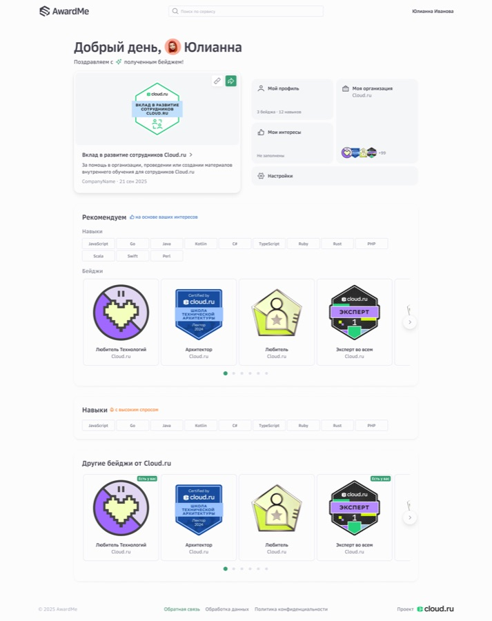
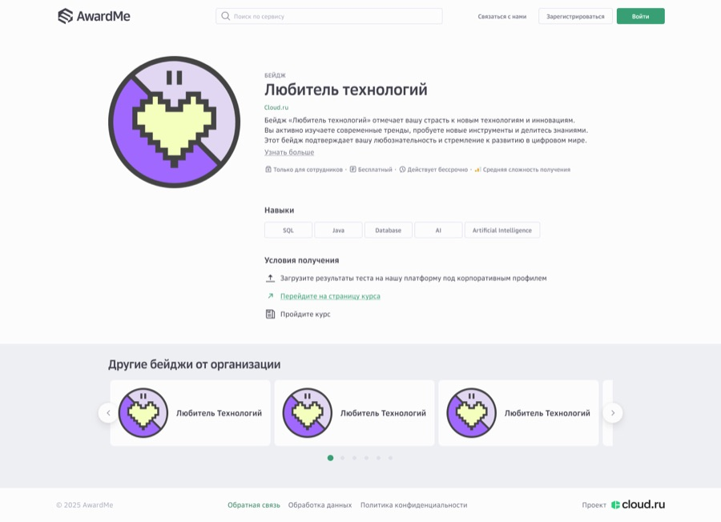
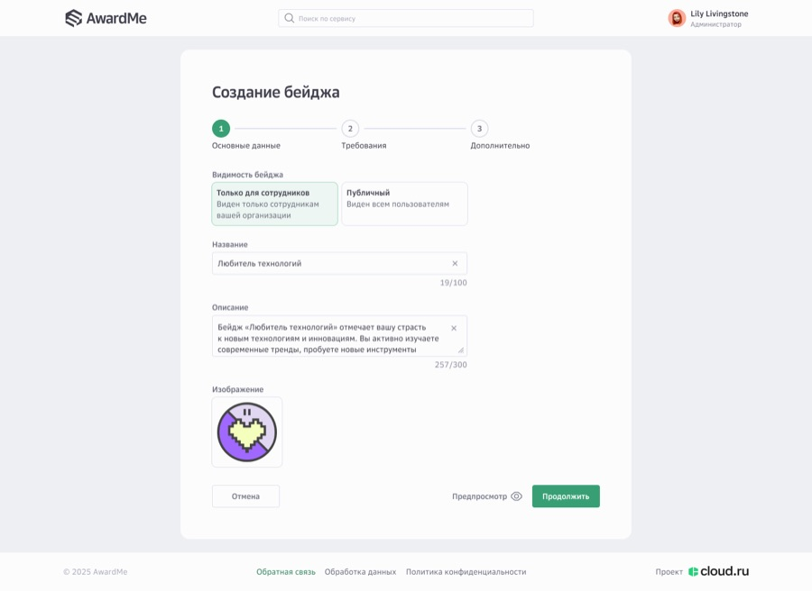
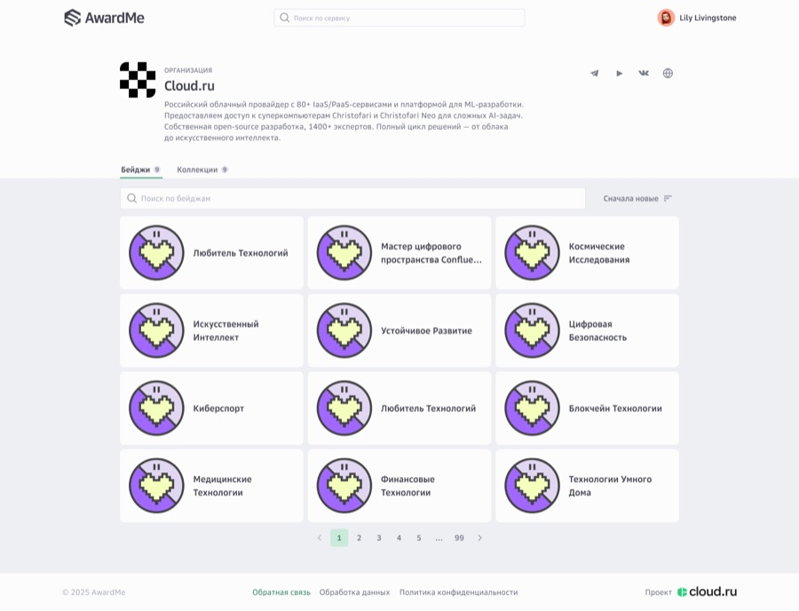
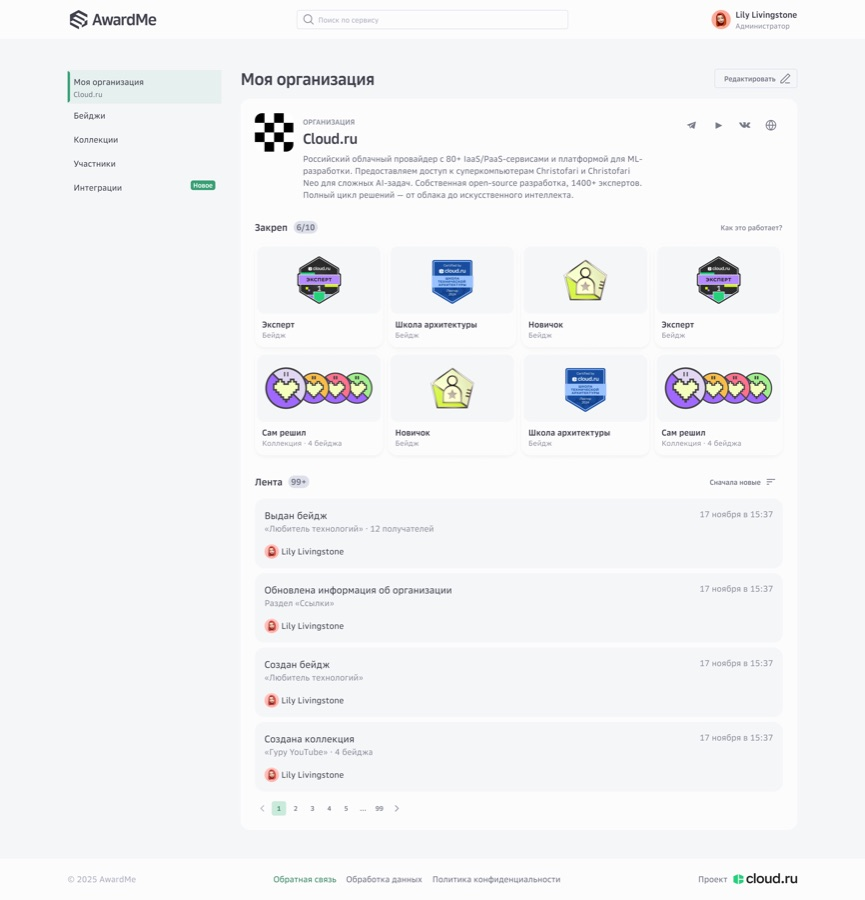
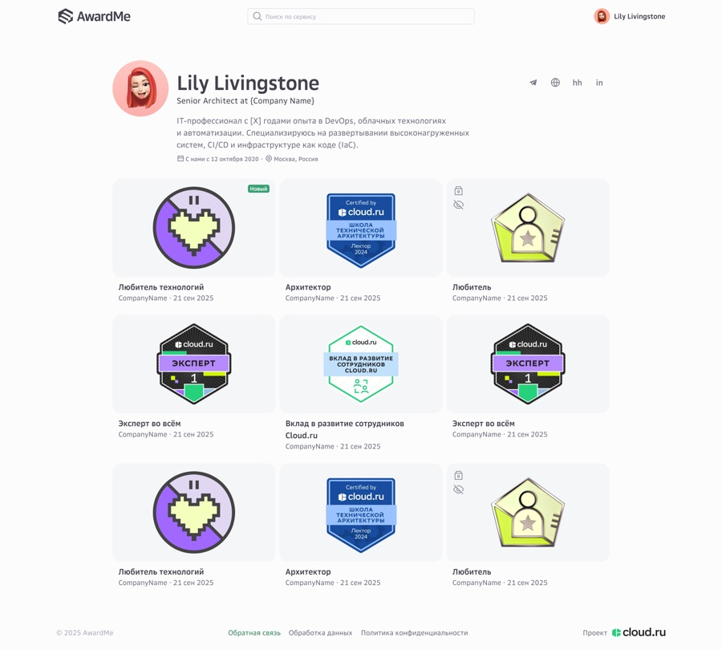

AwardMe
A corporate recognition platform built at Cloud.ru. Organisations define skill badges, issue them to employees, and publish public badge pages, so a credential earned inside the company still means something to someone outside it. Badges are issued to the Open Badges standard, which is what makes that possible: each one carries embedded metadata naming its issuer, its criteria, the evidence and the date, and can be verified by anyone. Without it this is a decorative internal sticker.
Welcome dashboard
The dashboard has one job on first open: make the newest badge feel like an event, then get out of the way. The most recent award takes the largest tile with its share action attached, because the moment someone earns a credential is the moment they are most likely to publish it. Everything else is a small labelled door — profile, organisation, interests, settings — deliberately sized so none of them competes with the award.
Recommendations run on declared interests rather than on activity, which is why the empty interests tile reads as an invitation instead of a dead end. Below it, skills in high demand and the organisation's other badges give a next step to someone who has just arrived and earned nothing yet.

Badge page
The public badge page is the product's export format. It has to make sense to someone who has never opened AwardMe and never will: a hiring manager following a link from a CV. So the page leads with the artefact and its issuing organisation, then answers the only two questions an outsider actually has. What does this represent, and what did it take to earn.
Criteria are listed as discrete steps with their own icons rather than as a paragraph, because a credential that cannot be audited is decoration. The metadata strip — employees only, free, no expiry, medium difficulty — sits directly under the description, where it qualifies the claim before anyone scrolls.

Badge creation
Creation is three steps, and visibility is the first field, before the name and before the artwork. That ordering is the whole argument: whether a badge is internal or public changes who its description is written for, and asking it last would mean rewriting everything above it. The two options are stated as full sentences rather than as a toggle, because the consequence is not obvious from a label.
Character counters are visible from the first keystroke rather than appearing at the limit, and preview is available before the final step, so an author can check the artefact without committing to it.

Organisation page
An organisation page has to hold at two very different scales: a company with six badges and one with several hundred. Tabs separate badges from collections so neither list dilutes the other, and search, sorting and pagination are present on the first screen rather than bolted on once the list grows. Retrofitting them later would mean redesigning the grid.
The organisation's own description sits above the tabs. For a visitor who arrived from a badge link, the company is the context that makes the credential legible, not a footnote below it.

Administration
The admin view is the same object seen by the person accountable for it. A left rail names what an administrator actually manages — organisation, badges, collections, participants, integrations — so the mental model matches the permissions rather than the page structure.
The pinned block carries an explicit budget, six of ten. A cap is what makes curation happen; an unbounded featured list becomes an archive within a quarter. Under it, the activity feed records who did what and when, because administration in a shared workspace has to stay attributable, and every entry names its author.

User profile
A profile here is a portfolio of credentials, so the grid is the page and the biography is its caption. Each badge carries its issuer and date, because a credential without provenance proves nothing.
Privacy is set per badge, not per profile. The lock and hidden-eye markers let someone publish selectively, which is the difference between a profile people maintain and one they abandon after their first internal award. Outbound links to Telegram, a personal site, HeadHunter and LinkedIn treat the profile as something that points outward rather than a closed internal record.

Selected screens. Company and member data shown is placeholder content from the design file.